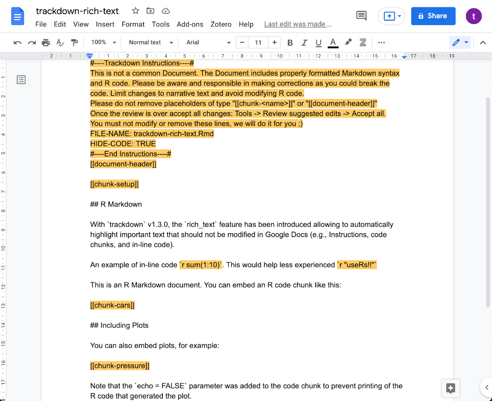

Chapter 10 Dynamic Documents
In the previous chapters, we learned to organize all our files and data in a well structured and documented repository. Moreover, we learned how to write readable and maintainable code and to use Git and GitHub for tracking changes and managing collaboration during the development of our project. Finally, we introduced dedicated tools for managing the analysis workflow pipeline.
Usually, however, the final product of most research projects is a scientific paper or some kind of report to share and discuss our results with a wider audience. In this chapter, we introduce the main tools for creating dynamic documents that integrate narrative text and code.
10.1 Literate Programming
We worked so hard to create a well structured and controlled analysis workflow to enhance the reproducibility of our results. At this point, of course, we do not want to waste all our efforts by manually copying and pasting values and figures when creating the final documents and reports. We also want document creation to be part of our fully reproducible workflow. Here is where literate programming comes to our aid.
Literate programming allows us to create reproducible documents by combining narrative text with analysis code. First, we define all the instructions and document elements (e.g., document format and style settings, narrative text, analysis code, figures and tables) in a source file. Subsequently, the source file is compiled to obtain our document in the desired output format. In this way, we can create documents in a fully reproducible approach.
The main advantages of literate programming are:
- Reproducibility. All document elements are explicitly coded in the source file. There are no manual actions or adjustments required to create the final output. In this way, the output is completely reproducible.
- Automatically Updates. Reported results, figures and tables are obtained directly from the analysis code. If we make some changes to the analysis, all document elements will be automatically updated with the new values.
- High-Quality Tables and Figures. Using dedicated packages, we can very easily obtain wonderful high-quality plots and well-formatted tables to include in our documents.
Ideally, when reporting the analysis results or creating tables and figures, we should avoid using any hard-coded value. Any value should be obtained directly from the analysis code.
In this way, we are sure that all values will be automatically updated in case of changes to the analysis.
Main programming languages provide their own ecosystems of tools and packages to create dynamic documents. For example,
- Python. Most popular tool is Jupyter Notebook (https://jupyter.org/).
- R. Most popular tool is R Markdown (https://rmarkdown.rstudio.com/) with all its related packages:
rmarkdown(Ushey, 2022),bookdown(Xie, 2022), etc.
To be precise, these tools are not limited to one specific programming language. Both of them support different programming languages (e.g., we can use R code in Jupyter Notebook and Python code in R Markdown documents). However, their popularity is mainly related to a specific programming language.
Surprisingly, a new contender has recently entered the scene Quarto. However, before introducing Quarto (see Section 10.2), we discuss a few other general aspects regarding dynamic documents.
10.1.1 Analysis Code and Dynamic Documents
There are two main approaches for integrating the analysis code in a dynamic document.
- Analysis code inside dynamic documents. The dynamic document is used as the primary script to run the whole analysis. Following this approach, all the analysis steps are defined and managed within the dynamic document.
- Analysis code outside dynamic documents. The dynamic document is used only to report the analysis results. Following this approach, all the analysis steps are defined and managed outside of the dynamic document.
Among the two approaches, we recommend the second one. Using dynamic documents as primary scripts to manage the analysis is fine in the case of simple projects. However, in the case of more complex projects, it is better to keep the actual analysis and the presentation of the results separate. This approach has the following advantages:
- The project can be maintained and developed more easily.
- Dynamic documents are fast to compile as they are only used to present the results and do not require running any computationally demanding task.
- The whole analysis is defined independently of the dynamic documents. In this way, we can report the results in multiple dynamic documents without the need of copying the whole analysis in each document but simply by loading the results.
To summarize, dynamic documents should be lightweight with minimal code used simply to present the analysis results. Analysis results should not be computed within the dynamic documents.
10.1.2 Output Formats
This is not a Microsoft Word VS LATEX debate. We all know who the winner is. Many literate programming tools allow us to obtain outputs in Microsoft Word as well. So, if anyone really can not live without Microsoft Word, they can still obtain their wonderful .docx documents. For all the others there is LATEX or\(\ldots\) HTML.
Yes because nowadays the most common way to access information is through a web browser. So, why not create a website for presenting our project and reporting the results instead of traditional PDF documents? Lets consider the two different approaches:
PDF. Traditional PDF documents are perfect for books, scientific papers, reports, or anything we could need to print on paper. Of course, it is better to read PDFs directly on computers and tablets (do not waste paper!), but yes, PDF documents are generally designed for printing and thus they are static documents.
If we need to create a PDF document, there is nothing better than LATEX. LATEX allows us to create incredibly high-quality documents controlling any aspect of our documents. Most literate programming tools support LATEX syntax. Of course, LATEX syntax may seem quite complex at the beginning but there are many tutorials helping us to familiarize ourselves with it. For example, see Overleaf documentation at https://www.overleaf.com/learn.
Web-Site. Creating a website allows us to take advantage of all the interactive features we are used to when navigating online. For example, we can include videos, audio files, interactive plots and tables, or any other element that could help us present our project or analysis results.
Most literate programming tools allow us to create HTML outputs. In this case, we need to deal with HTML, CSS and JavaScript. There are many resources available online that can help us learn all the syntaxes and language commands. Moreover, many free online services allow us to host our websites. For example, we can publish our website on GitHub Pages (https://pages.github.com/; see Chapter 8.4)
So depending on our specific needs, we may prefer creating traditional PDF documents or interactive websites.
Honestly, there is only one good reason for which we could need Microsoft Word, that is, its useful reviewing and editing tools for collaborating with other colleagues (e.g., suggesting mode, highlight, comments).
These are much-needed features that unfortunately are missing from almost any literate programming tools\(\ldots\)I mean, it was missing. See Section 10.3 for trackdown, a new R package proposing a simple solution for collaborative writing and editing of dynamic documents.
10.2 Quarto
At the beginning of April 2022, we witnessed a Quarto outbreak. Everyone was tweeting about Quarto (at least in the R community). But what is Quarto?
Quarto (https://quarto.org/) is an open-source scientific and technical publishing system built on Pandoc. As reported on the official website, Quarto allows to:
- Create dynamic content with Python, R, Julia, and Observable.
- Author documents as plain text markdown or Jupyter notebooks.
- Publish high-quality articles, reports, presentations, websites, blogs, and books in HTML, PDF, MS Word, ePub, and more.
- Author with scientific markdown, including equations, citations, crossrefs, figure panels, callouts, advanced layout, and more.
We may confuse Quarto simply for an updated version of R Markdown. They seem very similar, but in reality, there is an extremely important difference:
Quarto is a stand-alone tool!
This means that if our document includes only Python code, we do not need to install R or RStudio. Similarly, if our document includes only R code, we do not need to install Python. Therefore, by using Quarto, we are not restricted to any specific programming language or IDE. This is what could make Quarto the definitive tool for creating dynamic documents!
To understand what Quarto is, we suggest Alison Hills post We dont talk about Quarto ( see https://www.apreshill.com/blog/2022-04-we-dont-talk-about-quarto).
As Quarto is a very new tool that it is rapidly changing, we prefer to point directly to the official documentation for all information and a guide on how to use Quarto:
- Get started: https://quarto.org/docs/get-started/
- Quarto Guide: https://quarto.org/docs/guide/
Of course, Quarto will look very familiar for R Markdown users but with some subtle differences and many important improvements under the hood (see https://community.rstudio.com/t/i-use-like-r-markdown-why-should-i-try-out-quarto/133752/2 ).
With the arrival of Quarto, we might wonder what will happen to R Markdown? We do not have to worry. R Markdown is not going away.
R Markdown and its ecosystem of packages (bookdown, blogdown, xaringan, etc.) will still be actively maintained. For further details, see https://yihui.org/en/2022/04/quarto-r-markdown/.
10.3 trackdown Enhancing Collaboration
It is common to collaborate with other colleagues when writing documents. Different colleagues are assigned different parts, or colleagues may be required to review the document. Software like Microsoft Words provides very useful tools to facilitate this process (e.g., suggesting mode, highlight, comments).
Unfortunately, these very useful features are missing from almost any literate programming tool. When collaborating with other colleagues on a dynamic document, we can use Git for tracking changes (see Chapter 7). Git works greatly when developing code, however, it is not so effective for tracking changes and reviewing the narrative text. Moreover, we may need to collaborate with colleagues not familiar with Git or programming in general. We need something to facilitate collaboration. We need trackdown!
One of the authors of this book is also among the maintainers of the trackdown R package. trackdown (Kothe et al., 2021) offers a simple solution for collaborative writing and editing of R Markdown (or Sweave) documents. Using trackdown, we can upload the local .Rmd (or .Rnw) file as a plain-text file to Google Drive.
By taking advantage of the easily readable Markdown (or LATEX) syntax and the well-known online interface offered by Google Docs, colleagues can easily contribute to the writing and editing process. After integrating all authors contributions, we can download the final document and render it locally.
The package documentation is available at https://claudiozandonella.github.io/trackdown/.
10.3.1 The trackdown Workflow
During the collaborative writing/editing of an .Rmd (or .Rnw) document, it is important to employ different workflows for computer code and narrative text:
- Code - Collaborative code writing is done most efficiently by following a traditional Git-based workflow using an online repository (e.g., GitHub or GitLab; see Chapter 8).
- Narrative Text - Collaborative writing of the narrative text is done most efficiently using Google Docs which provides a familiar and simple online interface that allows multiple users to simultaneously write/edit the same document.
Thus, the workflows main idea is simple: Upload the .Rmd (or .Rnw) document to Google Drive to collaboratively write/edit the narrative text in Google Docs; download the document locally to continue working on the code while harnessing the power of Git for version control and collaboration. This iterative process of uploading to and downloading from Google Drive continues until the desired results are obtained. The workflow can be summarized as:
Collaborative code writing using Git & collaborative writing of narrative text using Google Docs
For a detailed example of the workflow see https://claudiozandonella.github.io/trackdown/articles/trackdown-workflow.html.

Functions and Special Features
trackdown offers different functions to manage the workflow:
upload_file()uploads a file for the first time to Google Drive.update_file()updates the content of an existing file in Google Drive with the contents of a local file.download_file()downloads the edited version of a file from Google Drive and updates the local version.render_file()downloads a file from Google Drive and renders it locally.
Moreover, trackdown offers additional features to facilitate the collaborative writing and editing of documents in Google Docs. In particular, it is possible to:
Hide Code: Code in the header of the document (YAML header or LaTeX preamble) and code chunks are removed from the document when uploading to Google Drive and are automatically restored during download. This prevents collaborators from inadvertently making changes to the code which might corrupt the file and allows them to focus on the narrative text.

Upload Output: The actual output document (i.e., the rendered file) can be uploaded to Google Drive in conjunction with the
.Rmd(or.Rnw) document. This helps collaborators to evaluate the overall layout including figures and tables and allows them to add comments to suggest and discuss changes.Use Google Drive shared drives: The documents can be uploaded to either a personal Google Drive or to a shared drive to facilitate collaboration.
10.3.1.1 Advantages of Google Docs
Google Docs offers users a familiar, intuitive, and free web-based interface that allows multiple users to simultaneously write/edit the same document. In Google Docs it is possible to:
- track changes (incl.accepting/rejecting suggestions)
- add comments to suggest and discuss changes
- check spelling and grammar errors (potentially integrating third-party services like Grammarly)
Moreover, Google Docs allows anyone to contribute to the writing/editing of the document. No programming experience is required, users can just focus on writing/editing the narrative text.
Note that not all collaborators have to have a Google account (although this is recommended to utilize all Google Docs features). Only the person who manages the trackdown workflow needs to have a Google account to upload files to Google Drive. Other collaborators can be invited to contribute to the document using a shared link.
The developmental version of trackdown (v1.3.0, currently only available on GitHub), introduced a new important feature:
rich_text. Upload rich documents to Google Docs where important text that should not be changed is automatically highlighted (e.g., placeholders hiding the code, header of the document, code chunks, and in-line code). This prevents collaborators from inadvertently making changes to the code which might corrupt the file. See rich-text feature details.

To install the developmental version of trackdown form GitHub (https://github.com/claudiozandonella/trackdown),
# install.packages(remotes)
# install the development version
remotes::install_github("claudiozandonella/trackdown",
build_vignettes = TRUE)Very soon, we will also add support for Quarto documents as well, see https://github.com/ClaudioZandonella/trackdown/issues/33